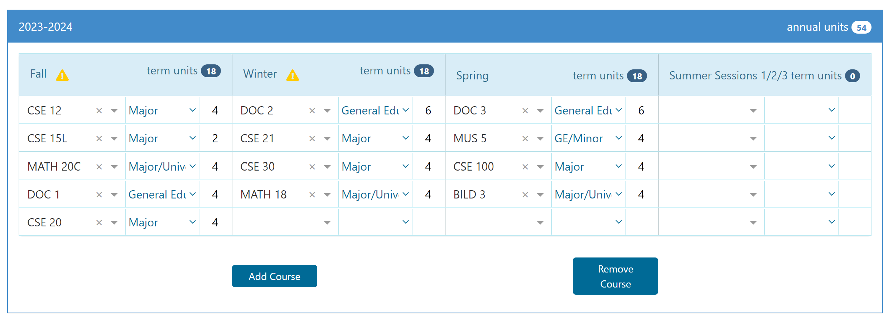
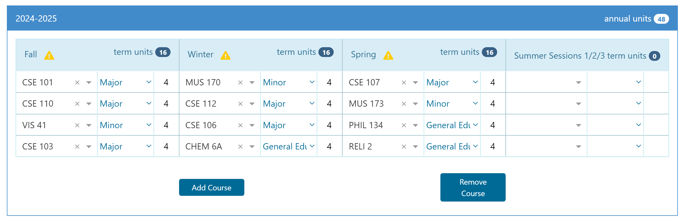
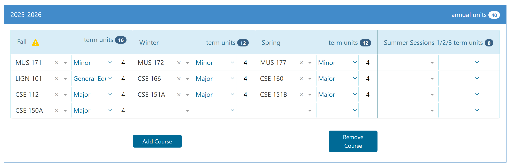
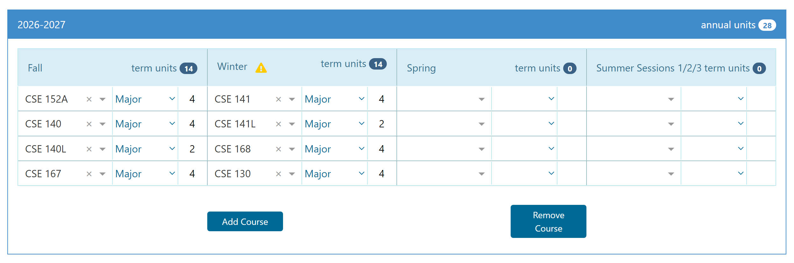

Four Year Plan
Freshman Year
The focus for my first year is mostly to finish the prerequisites for my upper-division CSE classes so I can start taking them as soon as possible. I am also doing my Marshall writing classes (DOC) and a few other GEs. In Spring, I am also taking MUS 5 which is a requirement for the ICAM music minor. During this year I want to join student orgs for computer science such as ACM.
Sophomore Year
In Sophomore year I plan to comple almost all of the rest of my GEs. In Fall I am taking a lot of upper-division CSE classes that are prerequisites for more advanced classes like CSE 101, 103, and 110. I also have classes that work towards my minor in every quarter (VIS and MUS). I also plan on applying for research opportunities since it will help me gain experience and will be a good addition to my resume.
Junior Year
This year I finish my last GE in Fall. By the end of the year I will have completed all the requirements for the ICAM minor. For the rest of my classes I am taking CSE electives. I need 15 in total and at least 3 from each of the three categories. It would also be helpful to look for internships this year. I'll definetly apply to Qualcomm since it is a local company and aligns with what I want to learn and the kind of career I want to pursue.
Senior Year
For my last year, I will finish the rest of the CSE electives. If I take three classes and a lab for the first two quarters, I can graduate a quarter early. After this I want to consider another year at UCSD where I could obtain a Master's Degree, or I could also begin work if a job opportunity arises.
feel free to reach out at
eschwartzman@ucsd.edu